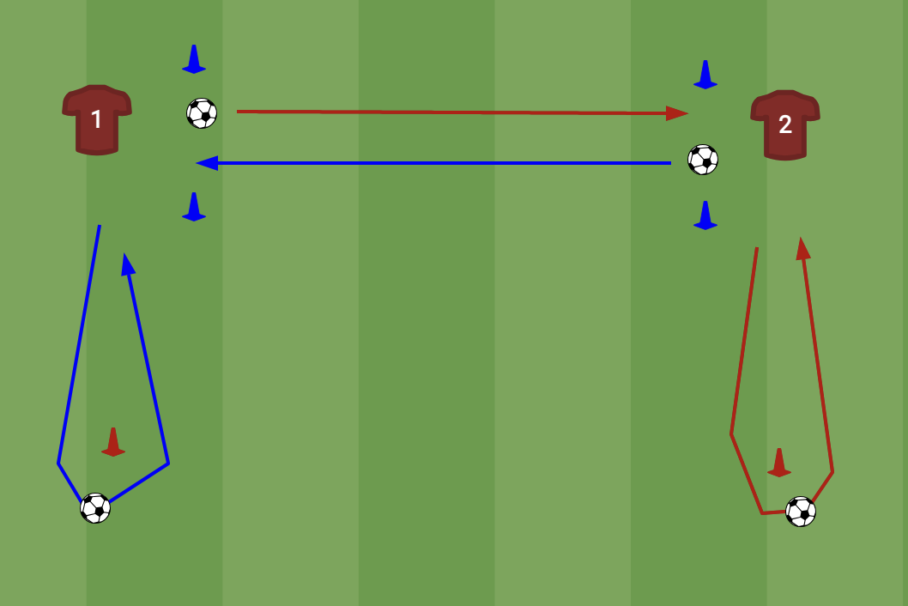
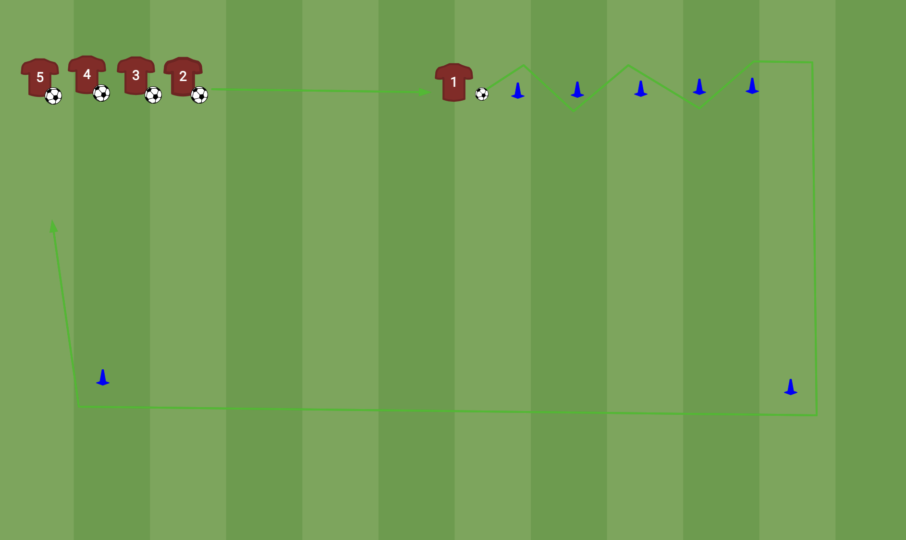

Klik in de tekst en typ. De opmaak ligt vast, dus je kunt niets stukmaken. Wijzigingen worden vanzelf bewaard in deze browser. Zweef over een rij, een oefening of een punt en er verschijnt een × om 'm weg te halen — ging dat mis, dan zet "Ongedaan maken" het terug. Printen geeft hetzelfde A4'tje als altijd — kies in het printvenster "Bewaar als PDF".
Hier staat het hele blaadje als tekst. Kopieer het om een training te bewaren in je map, of plak een eerder bewaarde training terug en klik op Laden.
Vrijdag 21 augustus 2026 · veld vanaf 18:00 · officieel 18:15–19:30
| Tijd | Wat | Wie |
|---|---|---|
| 18:00–18:15 | Inloop + peilenWie er is pakt een bal, vrij trappen. Wij lopen rond en vragen per speler: waar speelde je, waar wil je spelen, keeper ja/nee. Zo is het binnendruppelen al gebeurd vóór de officiële start. | samen |
| 18:15–18:20 | Kort samenkomenWelkom, voorstellen, in het kort wat we gaan doen. | Tjaco |
| 18:20–18:28 | Warming-up zonder balLoop- en rekvormen zoals voor een wedstrijd. Voordoen, en erbij zeggen dat we dit later door een speler laten leiden. | Tjaco |
| 18:28–18:40 | Tikkertje met balAfgebakend vak, 2 tikkers, getikt = wisselen. Hoog tempo, lol, en je ziet meteen wie behendig is. | samen |
| 18:40–18:45 | Uitleg + splitsenThema kort uitleggen, dan groep A en groep B. | Tjaco |
| 18:45–19:05 | Technisch blok — 2 groepenHalverwege wisselen. Beide oefeningen staan op pagina 2. | A: Tjaco B: Michel |
| 19:05–19:26 | Partij op kleine veldjes4v4 / 5v5 met kleine goaltjes, dus geen keepers nodig. Maximale balcontacten, iedereen in het spel. Posities laten wisselen, licht coachen, vooral laten voetballen. | samen |
| 19:26–19:30 | AfsluitenKort rondje "wat vond je leuk", één positief punt, vooruitblik, samen opruimen. | Tjaco |
Technisch blok, 18:45–19:05 · halverwege wisselen we van groep

In tweetallen. Thema: aannemen met richting, de bal niet stilleggen.
Opstelling. Per tweetal 4 pionnen: 2 startpionnen (daarachter staan A en B om vanaf in te spelen) en 2 kap-pionnen, in de aanspeellijn en iets verder naar buiten dan de startpion. In het midden een poortje van blauwe pionnen waar de pass doorheen moet.
Coachpunten. Bal vóór je wegnemen, niet plat aannemen en terugtikken. Actieve aanname, meteen in de looprichting. Gaat het te makkelijk, laat het dan op de andere voet aannemen.

Thema: balcontrole in de slalom, inspelen, dribbelen met richting.
Opstelling. Rij met bal aan één kant, een zigzag-straatje van pionnen om doorheen te slalommen, en twee hoekpionnen ruim opzij voor de terugroute — zo kruisen heen- en terugweg elkaar niet.
Coachpunten. Kleine tikjes in de slalom, bal dichtbij houden. Hoofd omhoog vóór de pass aan het eind. Terugdribbelen is extra balcontact, dus niet slenteren.
Let op: zet twee kortere rijen neer met elk een eigen straatje, niet één lange rij. Met één rij staan er te veel stil en halveer je de balcontacten.
Training 1 · O14 · vrijdag 21 augustus 2026